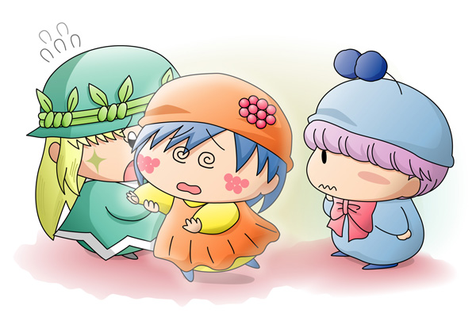

突然植木鉢がまぶしいほどに光り出しました。
光の中から現れたのは…なんとなんと妖精の女の子！
姿が現れたのもつかの間、女の子は足下がふらふらとしていて倒れそうになるのを慌ててアロマが受け止めました。
アロマ「だ、だいじょうぶ？」
女の子はきゅ～っと目を回しています。
アロマ「ムルモ様、この妖精さんは…？」
ムルモ「ほぇ、ボクの王国魔法が失敗するなんて…。
間違えてお花を妖精しゃんにしてしまったでしゅ」
アロマ「お花の妖精！？」
アロマが植木鉢の方を見ると、女の子と同じように植木鉢も光っていました。
ムルモ「ごめんなしゃいでしゅ」
アロマ「いいえ、とにかく目が覚めるまで待ってみませんか」
ムルモ「そうでしゅね」
「う、うーん…」
ムルモ「あ、気がついたみたいでしゅよ」
アロマ「大丈夫ですか？」
「あれ？わたしはいったい…？」
ムルモ「ごめんなさいでしゅ。
ボクのせいでお花を妖精しゃんに変えてしまったんでしゅ」
アロマ「本当にごめんなさい…」
「あなたは…アロマさんとムルモくんね？」
アロマ＆ムルモ「！」
リーネ「わたしはリーネ。
ずっとあなたに育てられてたお花なんだけど…」
その言葉にはっとするアロマ。
急におろおろと慌ててしゃべり始めました。
アロマ「ごめんなさい。
何度お水をあげても元気にならなくて…。
それでどうしたらいいか分からなくってムルモ様に相談して…」
リーネ「それはそうよ。
だってわたしはお水じゃなくてお菓子で育つんだから。
アロマ「えっ」
アロマちゃんのお家にあったポップコーンをさっそくリーネに食べさせました。
すると、だんだんとリーネの顔色がよくなっていきました。
|
前回展開についてアンケートを行ったところ「お花からオリフェ登場」が一番票を集めましたので、急遽私の方でオリフェを考えてみました（そのおかげでムルモの魔法は失敗魔法に…）。今回はアロマとの出会いが中心でしたが、今後妖精の性格などもじっくり描いていこうと思います。 ちなみにお花がお菓子で育つことについてポーロはちゃんと説明していたのですが、プレゼントで完全に舞い上がっていたアロマの耳には入らなかったという設定で(^^;。 さてこのリーネちゃん、これからのストーリーを盛り上げるために、アロマの恋のライバルになっていただきます(^^;。リーネはアロマと同じくらいポーロのことを好きという設定にしていますが、それではここで今回のアンケートです(^^)。ポーロをめぐって、リーネは今後どんな風にアロマと接するのでしょうか？今回は１時間に１票投票出来るようにしましたので、毎日何票も入れてもOKです。 2006.7.4追記 |
(2006/6/23)